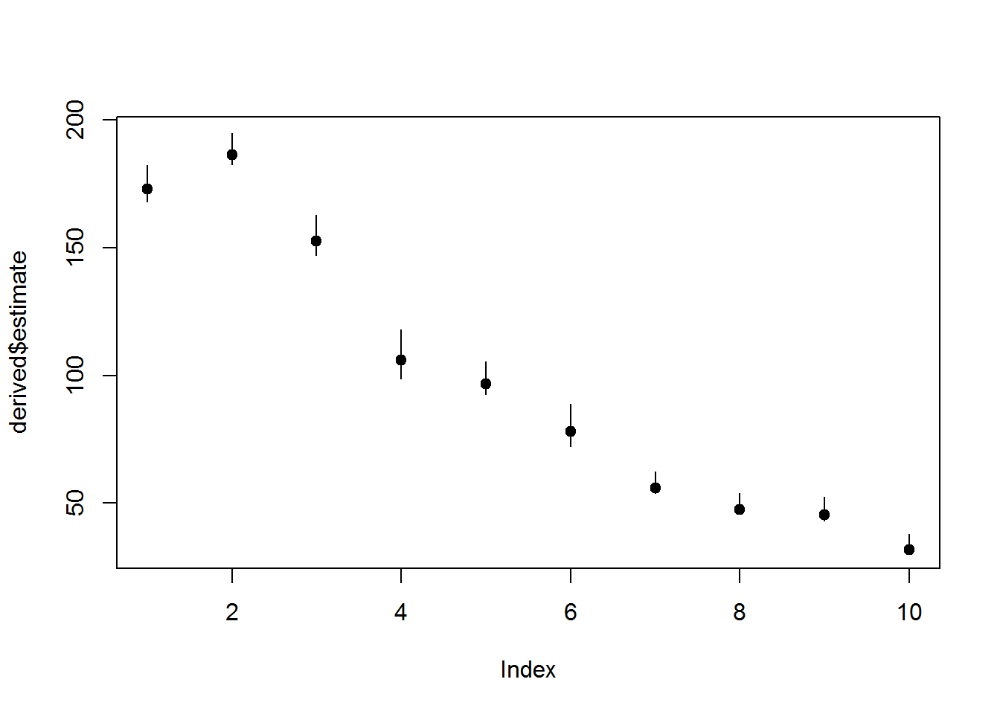

2 Basic Robust Design
2.1 Overview
2.2 Parameters for the robust design
- \(\phi\) or \(S\) is survival
- \(c\) is initial capture probability
- \(p\) is recapture probability
- \(\Gamma\) is the seniority parameter
- \(f_0\) is number of unobserved individuals
- \(\gamma^{\prime}\) is the probability of
- \(\gamma^{\prime\prime}\) is the
2.3 Analysis objectives
